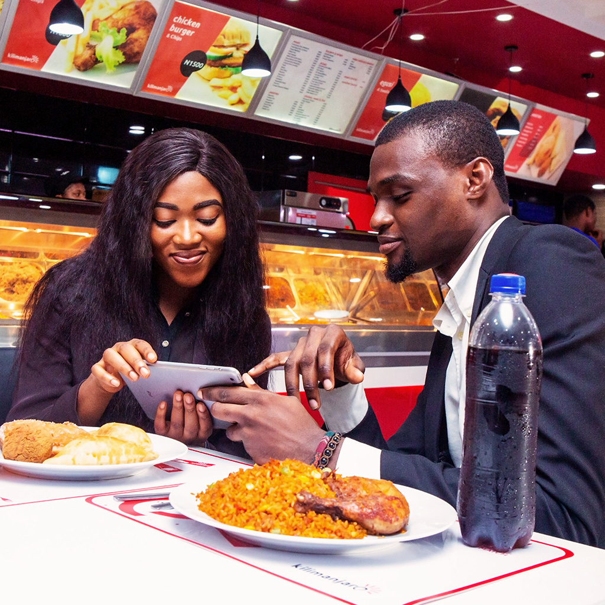
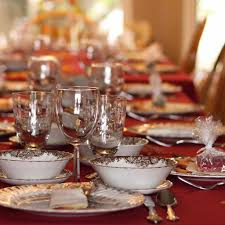
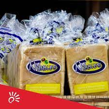
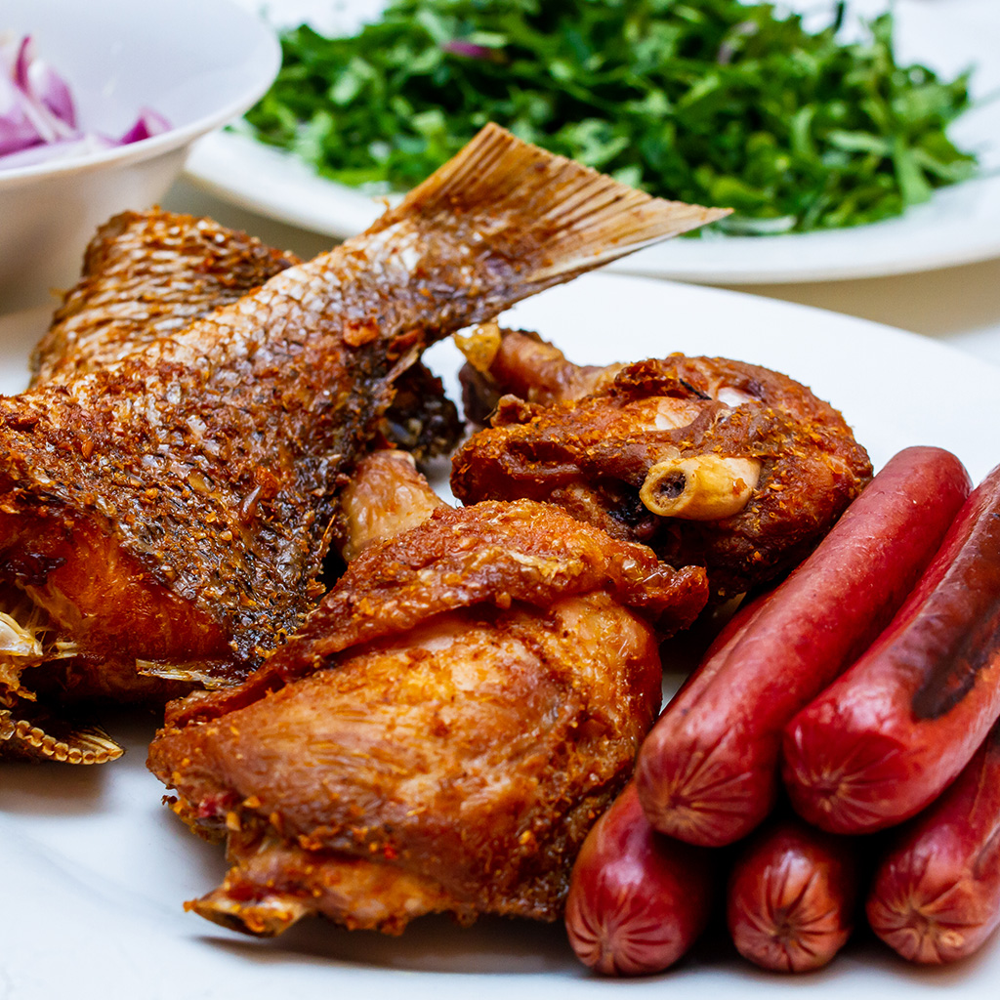

 Kilimanjaro is a quick service restaurant which specializes in local menu that are quite popular in Nigeria. We serve a wide vareity of local dishes as well as snacks to appeal to the dinstint preferences of the different localities in the country. We pride in operating one of the country's fastest growing restaurant brand. Our first restauarant opened in 2005 in Port Harcout and we have move on to open more restauarants around every region in the country.

Nibbles is the centre for sweetness. We specialize in making
delicious cakes, gelato ice cream, waffles and coffee. We are convinced you will be on our side
We also make customized cake for that your special occassion.

 Pizza jungle is dedicated to giving you tasty pizzas. We offer a unique flavour of pizza that will keep you coming
for more. A good pizza goes a long way in establishing a good relationship, so we go all the way
out to ensure every of your bite is worth it
Pizza jungle is dedicated to giving you tasty pizzas. We offer a unique flavour of pizza that will keep you coming
for more. A good pizza goes a long way in establishing a good relationship, so we go all the way
out to ensure every of your bite is worth it
 We've got you all covered irrespective of your needs, that is why we have a an event catering band; Sundry Food Services that caters to the needs of corporate organizations over Nigeria. We also cover and manage the most popular occasions in Nigeria. This brand has grown to be catering management of choice. We fully understand the difficulty involved in catering for a lot of people that is why we cater so you don't have to. All of your events and occassions are in haven hands with our catering department.

 The bakery gives our customers a great start to each day with oven fresh bread making use of the finest wheat, butter and a special mix from our baker.
 KIlligril is all about giving you the feel of the roaside albeit in an hygenic prepared environment. We offer amazing varieties such as Shawarma, Grilled chicken and Fish even to the very popular. We aim to change the story of street food in Nigeria with Killigril